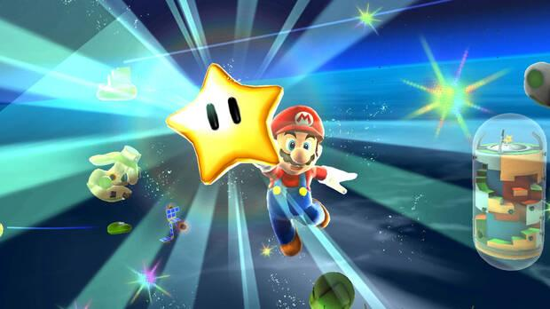

Un Speedrun es la acción de completar un juego de videojuegos lo mas rápido posible, utilizando estrategias específicas y, en algunos casos, glitches o errores en la programación del juego. Estas estrategias pueden incluir la explotación de errores en la física o la lógica del juego, la optimización de rutas y la minimización del tiempo de carga.
Los Speedruns se clasifican en varias categorías, entre ellas:
La comunidad de Speedruners también define categorías específicas para cada juego, como el 100%, que puede variar dependiendo de la complejidad del juego y la decisión de la comunidad. Algunos juegos, como Super Metroid, tienen un contador de porcentajes y una definición clara del 100%, mientras que otros no y la comunidad del juego decide cuál debería ser la definición.
En resumen, un Speedrun es la acción de completar un juego de videojuegos lo más rápido posible, utilizando estrategias específicas y, en algunos casos, glitches o errores en la programación del juego, y se clasifica en varias categorías según la complejidad y la estrategia utilizada.
La página oficial de speedruns es Speedrun.com.
Esta plataforma es el recurso principal para información de speedrunning, con un leaderboard impulsado por la comunidad, una base de datos extensa de juegos y categorías, y foros activos para discusión y soporte.
Los speedruns del Mario 64, por supuesto, también están recojidos en esta popular página, aquí, te muestro la tabla clasificatoria del Top 5 speedruns Any% del 15/10/2024.
Además, aqui te dejo el speedrun de Suigi, nº 1 de la categoría Any%
En los aparatos tecnológicos a veces hay fallos que parecen inexplicables. En ocasiones, el hardware con el que trabajamos está en perfecto estado y todos los programas de monitorización afirman que así es, pero no impide que aparezca un pantallazo azul en Windows. En algunos casos, el personaje de un videojuego hace un extraño momentáneamente cuya causa, una vez descartados los fallos en el software, no atiende a razones. Ahora tenéis algo a lo que señalar: los rayos cósmicos.
El fenómeno se documentó hace varias décadas, en 1978, cuando una DRAM de 16 kilobit de Intel fue expuesta a la radiación. La memoria funcionaba con unos y ceros, representados por la ausencia o presencia de electrones.
Se descubrió que pequeños rastros de uranio y torio en el paquete puede causar que un cero pase a ser un uno, y viceversa, debido a las partículas alfa generadas por los rastros de los materiales mencionados; las partículas alfa son las mismas que se encuentran en los rayos cósmicos.
Desde entonces han cambiado el modo de empaquetar los semiconductores y la manera de aislarlos en aparatos importantes como aviones, pero eso no quita que, aunque sea extremadamente raro, los semiconductores puedan verse influidos por rayos cósmicos. De hecho, conforme más pequeños sean los chips, más posibilidades hay de que las partículas alfa les afecte, pues el error procede de la acumulación de electrones en los pozos cuánticos.
Todo esto nos lleva al año 2013, cuando el speedrunner "DOTA_Teabag" estaba intentando superar el tiempo marcado en el mundo 14, "Tick Tock Clock". El fontanero tridimensional de repente salió disparado hacia arriba a través del suelo hasta una plataforma más alta. No había explicación al fenómeno e incluso otro usuario, "PenandCook12", puso una recompensa de 1000 dólares para quien lograra dar con una explicación.
Tuvo que ser el propio "PenandCook12" quien seis años después dio con la explicación: los rayos cósmicos. El usuario demostró que cambiando un uno a un cero en las coordinadas de posición verticales de Mario se replicaba lo que le ocurrió a "DOTA_Teabag". De algún modo, las partículas alfa habían afectado al hardware momentáneamente.